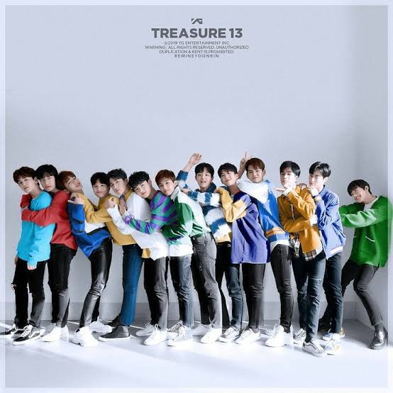
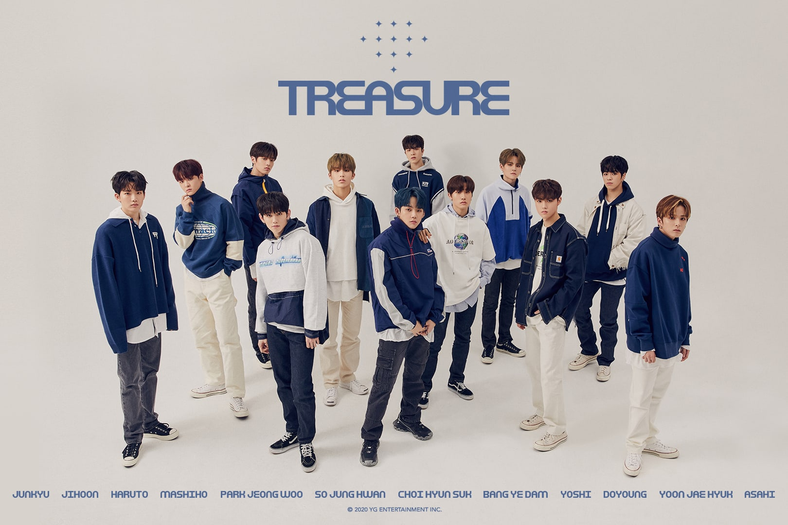

Historia de Treasure
Pre–debut y formación
YEDAM, JIHOON y DOYOUNG hicieron su primera aparición juntos en el programa de supervivencia de MNET, Stray Kids el 21 de noviembre de 2017 como representantes de YG.[1] Dentro del mismo plazo, HYUN SUK y JUNKYU participaron en el programa de supervivencia de JTBC, MIXNINE y ambos terminaron en 5º y 35º puesto respectivamente, siendo HYUN SUK parte de la alineación final del grupo a debutar, sin embargo, debido a la falta de acuerdos entre las agencias involucradas el debut del grupo ganador fue ca YEDAM y Hyun Suk también tuvieron un cameo en la serie de Netflix estrenada en octubre de 2018: YG Future Strategy Office, donde simulan la realización de la evaluación mensual de los aprendices en YG. A finales de ese año, YG dio a conocer que 29 aprendices de la agencia participarían de un programa de supervivencia llamado YG Treasure Box. Dentro de los aprendices más conocidos se encontraban: YEDAM de K-pop Star 2 y los participantes de MIXNINE, HYUN SUK y JUNKYU.[2] Durante la final de YG Treasure Box, HARUTO, YEDAM, JUNGHWAN y JUNKYU fueron los primeros en unirse a la alineación final, seguidos por JEONGWOO, JAEHYUK y HYUN SUK, bajo el nombre de TREASURE.[3][4] .
El 29 de enero del 2019, se anunció una segunda alineación bajo el nombre Magnum y se reveló que los miembros serían algunos aprendices que no habían quedado seleccionados en la alineación final para debutar en TREASURE: Yoon-bin, MASHIHO, DOYOUNG, YOSHI, JIHOON y ASAHI. Ambos grupos colectivamente serían llamados TREASURE 13, con el nombre de su fandom oficial TREASURE MAKER, abreviado TEUME, mismo nombre que le fue dado a los espectadores de YG Treasure Box.[5][6] Durante este tiempo, HYUN SUK participó como coescritor junto a B.I (ex líder de iKON) y como artista invitado en la canción "1, 2" del EP “24°C” de la cantante Lee Hi, quien para ese entonces también era parte de YG Entertainment. Antes del debut, una serie de pósteres promocionales para el grupo fueron lanzados a partir del 29 de abril de 2019 en adelante.[7] En el episodio 2 del reality de su compañero de agencia VIINI, Kwon Hyun-bin Begins, HARUTO y HYUN SUK hicieron una corta aparición, seguido de las apariciones de JUNKYU, YEDAM, HYUNSUK, JUNGHWAN y HARUTO en el episodio 3. A finales del 2019, Yoon-bin quien debía debutar como uno de los raperos decide dejar YG por diferencias creativas con la agencia, por lo que TREASURE 13 fue finalmente presentado como TREASURE.
2020 - Debut del grupo con 'THE FIRST STEP: CHAPTER ONE'
Desde el 7 de enero de 2020, YG Entertainment comenzó a liberar fotografías promocionales cada dos semanas , tanto individuales como grupales con el nombre de 'Editorial TREASURE'. Asimismo, todos los viernes a las 12:00 p.m. (KST) se estrenaba un capítulo de 'TREASURE Map''. Normalmente el formato es basado en famosos programas de televisión coreana, como lo son Knowing Bros, 3 meals a day, Amazing Saturday, etc. En donde se ve a los integrantes realizando diversas actividades, divirtiéndose, dando a conocer su s personalidades y la relación interna del grupo. .
De igual forma, semanalmente se liberaba un capítulo de '3 minutos con TREASURE', con una duración de 3 minutos tal como lo indica el nombre. De forma aleatoria, se liberaba un capítulo de 'T.M.I. (TREASURE MAKER Interaction)', donde muestran el detrás de escena de los materiales liberados; 'T-TALK' donde dos miembros conversan entre ellos y se hacen preguntas y respuestas acerca de una palabra clave en especifico, y 'FACT CHECK', donde miembros ponen a prueba algunas cosas que han dicho y así averiguar si es cierto o falso. Durante ese mismo año, YG informó que YEDAM lanzaría una canción en solitario antes de debutar oficialmente con TREASURE.[8] El 27 de mayo se revela que «WAYO» sería el nombre de la canción en solitario de YEDAM y el 05 de junio del 2020 se liberó el single con su respectivo vídeo musical. El 28 de mayo a través de las redes sociales de TREASURE y de su agencia,[9] publicaron el aviso de que la agrupación debutaría con su primer sencillo 'THE FIRST STEP: CHAPTER ONE' y la apertura de los pedidos anticipados de la versión física del sencillo.[10]
YG Entertainment publicó el póster en el que anunciaba la lista de canciones del primer sencillo del grupo: «BOY», que fue coescrita por los miembros HYUN SUK y HARUTO quienes también participaron en la escritura de la segunda canción: «COME TO ME» acompañados esta vez por YOSHI.[11] Se anunció en el mismo póster que las versiones instrumentales de las primeras dos canciones, estarían disponibles únicamente en el CD del sencillo. Luego de diversos vídeos e imágenes promocionales sobre su debut, el grupo realizó su tan esperado debut el 7 de agosto del 2020.[12]
 ir al inicio